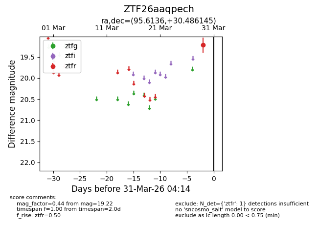
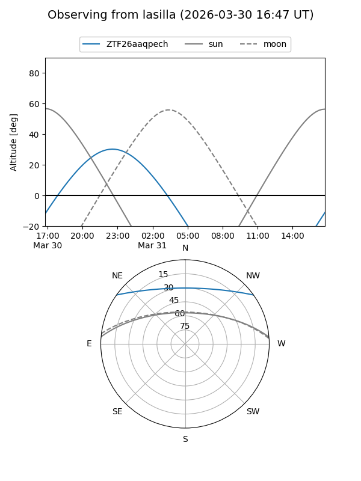
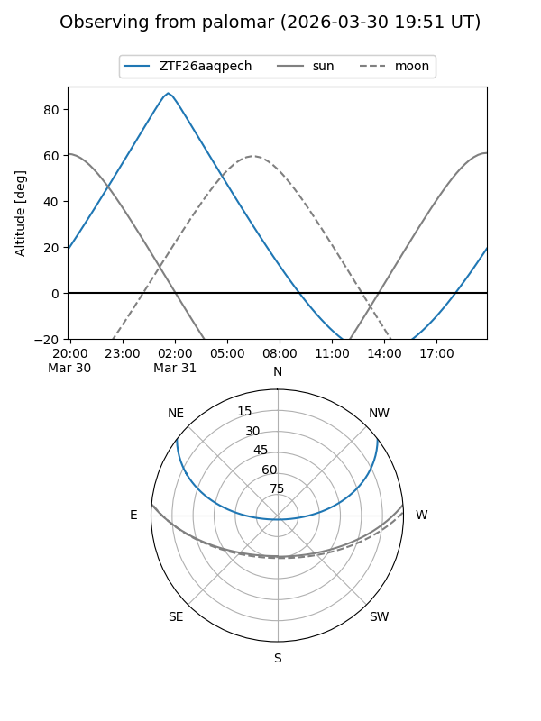

ZTF26aaqpech
Target ZTF26aaqpech at 2026-03-31 04:17
Aliases and brokers:
FINK: link
Lasair: link
ALeRCE: link
alt names
ZTF26aaqpech (ztf,fink_ztf)
Coordinates:
equatorial (ra, dec) = 95.6136,+30.48615
equatorial (HMS+DMS) = 06:22:27.26,+30:29:10.12
galactic (l, b) = (182.5554,+7.73552)
Flags:
Photometry:
last ztfr=19.22
1 ztfr detections
Lightcurve

Visibility


Additional plots